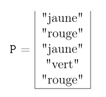

TP 14 - Les Files Enoncé-Corrigé
| TD n°14 : Structures de données - Les Files | Thème 1 : Structures de données |
|---|---|
| COURS et EXERCICES |
Les piles et les files sont deux structures de données linéaires qui permettent, au même titre que les listes, de gérer des séquences d’éléments. Ainsi, dans une pile et dans une file chaque élément est éga- lement repéré par sa position, il y a un premier, un dernier, chaque élément a un successeur (sauf le premier) et un prédécesseur (sauf le dernier). Les opérations disponibles pour ces deux structures sont assez proches car dans les deux cas, on veut pouvoir : * créer une file vide * connaître sa taille * lui ajouter un élément * lui retirer un élément * accéder à un élément particulier
Cependant, la politique d’ajout/retrait des éléments dans la séquence n’est pas la même. Le nom des opérations diffèrent également pour mieux distinguer les deux structures.
I. Les files
Il faut se représenter une file comme... une file d'attente ! On ne peut entrer dans la file qu'en dernière position et on ne peut la quitter que si on est le premier. L'ajout d'un élément dans une file ne peut se faire qu'à la fin (en dernière position) et le retrait d'un élément ne peut se faire qu'au début (en première position).
On dit que les files sont en mode FIFO (First In, First Out qui signifie « premier entré, premier sorti »).

➡ Interface d'une file
Le jeu d'opérations disponibles pour une file est :
construire_file(): crée une file videtaille(F): accès au nombre d'éléments dans la fileFenfiler(F, e): ajoute l'élémenteen dernier dans la fileF.defiler(F): retire le premier élément de la fileF. Précondition :Fn'est pas vide.premier(F): pour accéder (en lecture) au premier élément de la fileF(sans le retirer de la file). Précondition :Fn'est pas vide.
En anglais, l'opération
enfilerest souvent notéepush, l'opérationdepilerest souvent notéepopet l'opérationtailleest souvent notéetop.
Remarque : Comme pour les piles, on pourrait remplacer l'opération taille par l'opération est_vide et choisir que defiler renvoie également le premier élément pour s'économiser l'opération premier.
➡ Représentation d'une file et exemple⚓︎
Une file contenant les éléments \(\text{'a'}\), \(\text{'b'}\) et \(\text{'c'}\) (\(\text{'a'}\) étant le premier et \(\text{'c'}\) le dernier) sera représentée :
Exemple : Voici comment manipuler une file F :
| Opération | Contenu de la file F |
|---|---|
F = construire_file() |
\(\text{<<}\) |
taille(F) |
renvoie 0 |
enfiler(F, 'a') |
\(\text{<'a'<}\) |
enfiler(F, 'b') |
\(\text{<'a', 'b'<}\) |
enfiler(F, 'c') |
\(\text{<'a', 'b', 'c'<}\) |
premier(F) |
renvoie 'a' |
defiler(F) |
\(\text{<'b', 'c'<}\) |
enfiler(F, premier(F)) |
\(\text{<'b', 'c', 'b'<}\) |
➡ Applications des files⚓︎
Les files sont très utilisées en informatique. Leur usage caractéristique concerne les files d'attentes :
- Un système d'exploitation gère l'ordonnancement des processus par des files (voir Thème 3 : Architectures matérielles, systèmes d'exploitation et réseaux)
- Une imprimante gère les tâches d'impression avec des files : chaque nouvelle tâche est insérée dans une file d'attente, et celles-ci sont traitées dans l'ordre d'arrivée.
- On peut aussi utiliser une pile pour parcourir (en profondeur) un graphe et mémoriser les sommets visités. (voir Thème 5 : Algorithmique)
- etc.
II. Exercices sur les files
Activité 1 : Manipulation des files
Question 1.
On considère la séquence d’instructions suivantes. Indiquez le résultat à chaque étape.
- F = construire_file()
- enfiler(F, 1)
- enfiler(F, 2)
- enfiler(F, 3)
- s = premier(F)
- defiler(F)
- defiler(F)
- enfiler(F, s)
Question 2.
Écrivez la séquence d’instructions permettant d’obtenir l’évolution suivante pour une file F.
| Etat de la pile P | Instructions (à compléter) |
|---|---|
| \(\text{<<}\) | |
| \(\text{<3<}\) | |
| \(\text{<3 , 1<}\) | |
| \(\text{<3 , 1 , 4<}\) | |
| \(\text{<1 , 4<}\) | |
| \(\text{<4<}\) | |
| \(\text{<<}\) |
➡ Implémentations⚓︎
Il existe différentes façons d'implémenter une file, on peut par exemple utiliser :
- un tableau (redimensionnable ou non)
- une liste chaînée
- deux piles
Avec ces implémentations, il faudra en général faire un compromis sur l'efficacité des opérations car celles-ci nécessitent de travailler sur les deux extrémités de la file (pour enfiler/défiler).
- Si on utilise un tableau, les opérations en début sont coûteuses et celles à la fin ne le sont pas. On peut alors décider d'enfiler en fin de tableau (peu coûteux) mais il faudra défiler en début de tableau (coûteux). Si on fait le choix inverse, c'est l'opération
defilerqui sera peu coûteuse et l'opérationenfilerqui sera coûteuse. - Si on utilise une liste chaînée, c'est l'inverse (efficace en tête et coûteux en queue) mais le problème reste le même : une des deux opérations sera moins efficace.
Il existe en réalité une implémentation plus efficace mais nous n'en parlerons pas ici.
Activité 2 : Première implémentation d'une file (avec le type `list` de Python)
On définit le type abstrait File par les opérations :
- création d’une file vide
- enfiler : ajout en queue de file
- defiler : retrait du premier élement de la file
- premier : accès (en lecture) au premier élément de la file
- taille : accès au nombre d’éléments
L’objectif est d’implémenter ce type abstrait en utilisant le type prédéfini list de Python (tableau dynamique = redimensionnable).
On choisira d’enfiler en fin de list (efficace) et de défiler en début de list (coûteux). On aurait très bien pu faire l’inverse, mais l’une des deux opérations (enfiler ou défiler) ne peut pas être en temps constant avec le type list.
Pour une évaluation de la complexité des opérations élémentaires de Python voir le site : Python.org - Time complexity.
Question 1 :
Consultez les méthodes disponibles sur le type list de Python pour trouver comment retirer un élément en tête de liste (vous devriez savoir comment ajouter en fin de liste !). Quelle est la méthode à utiliser ?
Question 2 :
Ecrivez une classe File implémentant les opérations du type abstrait file avec les list de Python. Vous utiliserez la méthode __len__ pour renvoyer la longueur d’une file.
Exemple : on veut que le code
F = File()
print(F)
F.enfiler(1)
print(F)
F.enfiler(2)
print(F)
F.enfiler(3)
print(F)
s = F.premier()
print(s)
F.defiler()
print(F)
F.defiler()
print(F)
F.enfiler(s)
print(F)
produise l’affichage
<<>
<1<
<1,2<
<1,2,3<
1
<2, 3<
<3<
<3,1<
class File:
def __init__(self):
self.contenu = []
def enfiler(self, element):
self.contenu.append(element)
def defiler(self):
assert self.taille() != 0, "on ne peut pas défiler une file vide"
self.contenu.pop(0) # ou return self.contenu.pop(0) si l'opération défiler doit aussi renvoyer le sommet
def premier(self):
assert self.taille() != 0, "une file vide n'a pas de premier élément"
return self.contenu[0]
def taille(self):
return len(self.contenu)
__len__ = taille # pour pouvoir également utiliser len pour obtenir la longueur d'une file
# pour représenter une file
def __repr__(self):
ch = ""
for e in self.contenu:
ch = ch + str(e) + ","
ch = ch[:-1] # pour enlever la dernière virgule
ch = "<" + ch + "<"
return ch
Question 3 :
Définissez la méthode spéciale __repr__ pour afficher le contenu d’une file comme unelist de Python.
Attention :
la méthode __repr__ doit renvoyer une chaîne de caractères (conversion avec la fonction str)
Exemple : on veut que le code
F = File()
print(F)
F.enfiler(1)
print(F)
F.enfiler(2)
print(F)
F.enfiler(3)
print(F)
s = F.premier()
print(s)
F.defiler()
print(F)
F.defiler()
print(F)
F.enfiler(s)
print(F)
produise l’affichage
<<
<1<
<1,2<
<1,2,3<
1
<2, 3<
<3<
<3,1<
Activité 3 : Deuxième implémentation d’une file (avec deux piles)
On veut réaliser une implémentation objet d’une file en utilisant deux piles.
Vous utiliserez l’implémentation suivante d’une pile pour travailler
class Pile:
def __init__(self):
self.contenu = []
def empiler(self, e):
self.contenu.append(e)
def depiler(self):
assert self.taille != 0, "on ne peut pas dépiler une pile vide"
self.contenu.pop()
def sommet(self):
assert self.taille != 0, "une pile vide n’a pas de sommet"
return self.contenu[-1]
def taille(self):
return len(self.contenu)
# pour représenter la Pile
def __repr__(self):
ch = ''
for e in self.contenu:
ch = str(e) + "," + ch # ne pas oublier de convertir les éléments en␣chaine de caractères
ch = ch[:-1] # pour enlever la dernière virgule
ch = '>' + ch+']'
return ch
Pour simplifier, l’opération defiler renverra également le premier élément (en plus de le retirer de la file). L’opération premier n’est alors plus nécessaire. Vous devez donc implémenter une classe File permettant les opérations suivantes :
- création d’une file vide
- enfiler : ajout en queue de file
- defiler : renvoie le premier élement de la file et retire cet élément de la file
- len : accès au nombre d’éléments
Aide :
- Opération enfiler (simple) : C’est toujours dans l’une des deux piles (par exemple pA) que l’on empile un nouvel élément à enfiler.
- Opération defiler (compliquée) :
- Si l’autre pile (pB) n’est pas vide, son sommet est le premier élément de la file (celui à défiler)
- Sinon (si pB est vide), le premier élément de la file (celui à défiler) est au fond de pA. On peut alors “retourner” pA sur pB pour le premier élément de la file arrive au sommet de pB.
- Opération len (simple) : il suffit d’utiliser la méthode taille définie dans la classe Pile.
Question :
Complétez les méthodes enfiler, len et defiler de la classe File suivante qui implémente une file avec deux piles.
class File:
"""File avec deux piles"""
def __init__(self):
self.pA = Pile() # pA et pB sont les deux attributs de nos objets de la classe File
self.pB = Pile()
def enfiler(self, e):
# à compléter
pass
def __len__(self):
# à compléter
pass
def defiler(self):
if self.pA.taille() == 0 and self.pB.taille() == 0:
raise ValueError("on ne peut pas défiler une file vide")
# à compléter
# La méthode __repr__ est définie pour que vous puissiez voir l’état d’une file
def __repr__(self):
import copy
#print("pile A : ", repr(self.pA)) # pour voir le contenu des deux piles
#print("pile B : ", repr(self.pB))
lstA = copy.copy(self.pA.contenu) # copie des list Python représentant nos deux piles
lstB = copy.copy(self.pB.contenu) # pour ne pas les modifier
lstB.reverse() # on a besoin de renverser lstB pour avoir nos éléments dans l’ordre d’entrée
lst = lstB + lstA # et de concaténer lstB et lstA dans cet ordre
# on construit ensuite la chaine "<...<" qui représente nos files
ch = ""
for e in lst:
ch = ch + str(e) + ","
ch = ch[:-1] # pour enlever la dernière virgule
ch = "<" + ch + "<"
return ch
class Pile:
def __init__(self):
self.contenu = []
def empiler(self, e):
self.contenu.append(e)
def depiler(self):
assert self.taille != 0, "on ne peut pas dépiler une pile vide"
self.contenu.pop()
def sommet(self):
assert self.taille != 0, "une pile vide n’a pas de sommet"
return self.contenu[-1]
def taille(self):
return len(self.contenu)
# pour représenter la Pile
def __repr__(self):
ch = ""
for e in self.contenu:
ch = str(e) + "," + ch # ne pas oublier de convertir les éléments en chaine de caractères
ch = ch[:-1] # pour enlever la dernière virgule
ch = ">" + ch+']'
return ch
class File:
"""File avec deux piles"""
def __init__(self):
self.pA = Pile() # pA et pB sont les deux attributs de nos objets de la classe File
self.pB = Pile()
def enfiler(self, e):
return self.pA.empiler(e)
def __len__(self):
return self.pA.taille()+self.pB.taille()
def defiler(self):
if self.pA.taille() == 0 and self.pB.taille() == 0:
raise ValueError("on ne peut pas défiler une file vide")
# La méthode __repr__ est définie pour que vous puissiez voir l’état d’une file
else:
if self.pB.taille() == 0:
for x in range(self.pA.taille()-1):
self.pB.empiler(self.pA.sommet())
self.pA.depiler()
self.pA.depiler()
print('pA',self.pA)
print('pB1',self.pB)
else:
self.pB.depiler()
def __repr__(self):
import copy
#print("pile A : ", repr(self.pA)) # pour voir le contenu des deux piles
#print("pile B : ", repr(self.pB))
lstA = copy.copy(self.pA.contenu) # copie des list Python représentant nos deux piles
lstB = copy.copy(self.pB.contenu) # pour ne pas les modifier
lstB.reverse() # on a besoin de renverser lstB pour avoir nos éléments dans l’ordre d’entrée
lst = lstB + lstA # et de concaténer lstB et lstA dans cet ordre
# on construit ensuite la chaine "<...<" qui représente nos files
ch = ""
for e in lst:
ch = ch + str(e) + ","
ch = ch[:-1] # pour enlever la dernière virgule
ch = "<" + ch + "<"
return ch
III. Sujet BAC sur les files
Métropole Juin 2021 - Sujet 2
Cet exercice porte sur les structures de données linéaires
Une méthode simple pour gérer l'ordonnancement des processus est d'exécuter les processus en une seule fois et dans leur ordre d'arrivée.
Question 1
Parmi les propositions suivantes, quelle est la structure de données la plus appropriée pour mettre en œuvre le mode FIFO (First In First Out) ?
a. liste
b. dictionnaire
c. pile
d. file
réponse d une file
Question 2
On choisit de stocker les données des processus en attente à l'aide d'une liste Python lst.
On dispose déjà d'une fonction retirer(lst) qui renvoie l'élément lst[0] puis le supprime de la liste lst.
Écrire en Python le code d'une fonction ajouter(lst, proc) qui ajoute à la fin de la liste lst le nouveau processus en attente proc.
def ajouter(lst,proc):
lst.append(proc)
On choisit maintenant d'implémenter une file file à l'aide d'un couple (p1,p2)où p1 et p2 sont des piles.
Ainsi file[0] et file[1] sont respectivement les piles p1 et p2.
Pour enfiler un nouvel élément elt dans file, on l'empile dans p1.
Pour défiler file, deux cas se présentent.
- La pile
p2n'est pas vide : on dépilep2. - La pile
p2est vide : on dépile les éléments dep1en les empilant dansp2jusqu'à ce quep1soit vide, puis on dépilep2.

Question 3
On considère la situation représentée ci-dessous.

On exécute la séquence d'instructions suivante :
enfiler(file,ps6)
defiler(file)
defiler(file)
defiler(file)
enfiler(file,ps7)
Représenter le contenu final des deux piles à la suite de ces instructions.

Question 4
On dispose des fonctions :
empiler(p,elt)qui empile l'élémenteltdans la pilep,depiler(p)qui renvoie le sommet de la pilepsipn'est pas vide et le supprime,pile_vide(p)qui renvoieTruesi la pilepest vide,Falsesi la pilepn'est pas vide.
a. Écrire en Python une fonction est_vide(f) qui prend en argument un couple de piles f et qui renvoie True si la file représentée par f est vide, False sinon.
b. Écrire en Python une fonction enfiler(f,elt) qui prend en arguments un couple de piles f et un élément elt et qui ajoute elt en queue de la file représentée par f.
c. Écrire en Python une fonction defiler(f) qui prend en argument un couple de piles f et qui renvoie l'élement en tête de la file représentée par f en le retirant.
def est_vide(f):
return pile_vide(f[0]) and pile_vide(f[1])
def enfiler(f,elt):
empiler(f[0],elt)
def defiler(f):
p1 = f[0]
p2 = f[1]
if pile_vide(p2):
while not pile_vide(p1):
v = depiler(p1)
empiler(p2,v)
return depiler(p2)
Amérique du Nord 2021 - Sujet 2
Cet exercice porte sur la notion de pile, de file et sur la programmation de base en Python.
Les interfaces des structures de données abstraites Pile et File sont proposées ci-dessous.
On utilisera uniquement les fonctions ci-dessous :
Structure de données abstraite : Pile
Utilise :
- Éléments, Booléen
Opérations :
- creer_pile_vide : ∅ → Pile
creer_pile_vide() renvoie une pile vide - est_vide : Pile → Booléen
est_vide(pile) renvoie True si pile est vide, False sinon - empiler : Pile, Élément → Rien
empiler(pile, element) ajoute element au sommet de la pile - depiler : Pile → Élément
depiler(pile) renvoie l’élément au sommet de la pile en le retirant de la pile
Structure de données abstraite : File
Utilise :
- Éléments, Booléen
Opérations :
- creer_file_vide : ∅ → File
creer_file_vide() renvoie une file vide - est_vide : File → Booléen
est_vide(file) renvoie True si file est vide, False sinon - empiler : File, Élément → Rien
empiler(file, element) ajoute element dans la file - depiler : File → Élément
depiler(file) renvoie l’élément au sommet de la file en le retirant de la file
Question 1
(a) On considère la file F suivante :

Quel sera le contenu de la pile P et de la file F après l’exécution du programme Python suivant ?
1 P = creer_pile_vide ()
2 while not( est_vide (F )):
3 empiler (P, defiler (F))
(b) Créer une fonction taille_file qui prend en paramètre une file F et qui renvoie le nombre d’éléments qu’elle contient. Après appel de cette fonction la file F doit avoir retrouvé son état d’origine.
1 def taille_file (F):
2 """ File -> Int """

def taille_file(F):
t = 0
ft = creer_file_vide()
while not est_vide(F):
t = t + 1
enfiler(ft, defiler(F))
while not est_vide(ft):
enfiler(F, defiler(ft))
return t
Question 2
Écrire une fonction former_pile qui prend en paramètre une file F et qui renvoie une pile P contenant les mêmes éléments que la file.
Le premier élément sorti de la file devra se trouver au sommet de la pile ; le deuxième élément sorti de la file devra se trouver juste en-dessous du sommet, etc.
Exemple : 
former_pile(F) va renvoyer la pile P ci-dessous :

def former_pile(F):
p = creer_pile_vide()
pt = creer_pile_vide()
while not est_vide(F):
empiler(pt,defiler(F))
while not est_vide(pt):
empiler(p,depiler(pt))
return p
Question 3
Écrire une fonction nb_elements qui prend en paramètres une file F et un élément elt et qui renvoie le nombre de fois où elt est présent dans la file F.
Après appel de cette fonction la file F doit avoir retrouvé son état d’origine.
def nb_elements(F, ele):
nb = 0
ft = creer_file_vide()
while not est_vide(F):
x = defiler(F)
if x==ele:
nb = nb + 1
enfiler(ft, x)
while not est_vide(ft):
enfiler(F, defiler(ft))
return nb
Question 4
Écrire une fonction verifier_contenu qui prend en paramètres une file F et trois entiers :
nb_rouge, nb_vert et nb_jaune.
Cette fonction renvoie le booléen True si "rouge" apparaît au plus nb_rouge fois dans la file F, "vert" apparaît au plus nb_vert fois dans la file F et "jaune" apparaît au plus nb_jaune fois dans la file F.
Elle renvoie False sinon. On pourra utiliser les fonctions précédentes.
def verifier_contenu(F, nb_rouge, nb_vert, nb_jaune):
return nb_elements(F, "rouge") <= nb_rouge and nb_elements(F,"vert") <= nb_vert and nb_elements(F, "jaune") <= nb_jaune